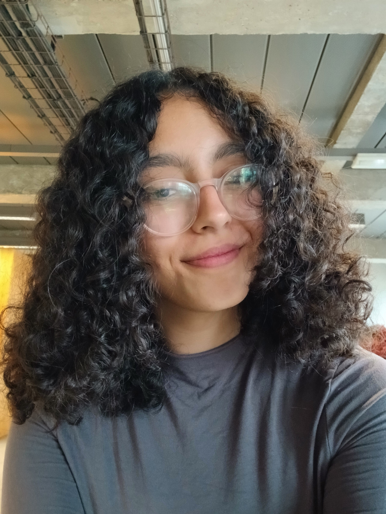

Actuellement étudiante en MIASHS à l'université Sorbonne Paris 1

Actuellement en deuxième année de licence Mathématiques et informatique Appliquées aux Sciences Humaines et sociales,je suis une étudiante souhaitant travailler dans le milieu de l'informatique. N'étant pas encore certaine du domaine dans lequel je souhaiterais me spécialiser,je suis motivée à travailler dur pour le découvrir!
L'expérience CPGE m'as appris beaucoup de choses, notamment à persévérer, à mieux croire en mes capacités,et que si l'économie n'est pas faite pour moi, les mathématiques et l'informatique, en revanche,le sont, ce qui m'a amenée à ma formation actuelle.
Projet académique mettant en œuvre les principes de la programmation orientée objet : encapsulation, héritage, polymorphisme.
Application Web interactive permettant l'envoi personnalisé de messages romantiques par e-mail, incluant une gestion sécurisée des clés API.
Application desktop permettant de gérer ses lectures personnelles. Le projet inclut la création d'une interface utilisateur intuitive pour le suivi des lectures et le classement des livres du préféré au moins apprécié.